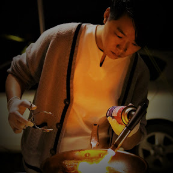

MY BEST YOUTUBE TOP 3
첫번째는 WOOPTV 라는 채널이다.
트위치 종합 게임 스트리머이다.
소개문에 인용한 스트리머 본인의 말따마나 방송 본류나 진행을 간혹 고민하긴 하지만 시참이나 특집같은 때나 그럴 뿐,
대체로 좋아하고, 즐기는 게임을 즐기는 것을 방송한다. 일련의 방송 송출 자체가 컨텐츠인 격이다.
두번째는 취미로 요리하는 남자이다.

대한민국의 요리관련 유튜버. 원래는 인스타그램과 루리웹의 음식갤러리에서 요리 사진을 올리며 활동하던 중, 친구인 유튜버 제이제이의
영상에서 출연한 후 본격적으로 유튜버 활동을 시작했다. 이후로도 가끔 제이제이의 채널에 출연하는 중이며, 배려심이 보이는 모습[3]
덕분에 호평을 받기도 했다.이후로는 특유의 수비드 덕후스런 모습과, 본인만이 아니라 가족이나 친구들을 챙겨주며 요리해 주는 모습 덕분에
시청자를 늘려가고 있다.특히 구독자 1만명 이후 상당히 빠른 성장 페이스[4]를 보이고 있는 중이다.
처음엔 '취미로 요리하는 남자'란 명칭과 이를 줄인 취요남이란 애칭을 썼으나 현재는 더 줄여서 그냥 요남이라고 부른다.
이름은 취미로 요리하는... 이지만 사용하는 장비와 조리 솜씨는 그냥 취미 수준이 아니다. 요리사 친구들도 많은 듯.
본업은 건축자재 영업사원 이라고 하며, 요리 외에도 캠핑이 취미인 것으로 보인다.
세번째는 연두의 일상생활이다.

트위치에서 활동하는 인터넷 방송인. 고전 게임, 인디 게임, 온라인 게임, 콘솔 게임, AAA 게임 등 다양한 게임을 하는 종합게임 방송 스트리머이다.
2012년 1월 17일에 아프리카TV에서 방송을 시작했고, 2016년 10월 26일에 트위치로 이적하여 트위치에서 방송을 하고 있다. 아프리카TV에서 4년
넘게 방송하면서 애청자를 만 명 가량 모았지만, 트위치로 옮기고 1년 반만에 팔로워 10만 명을 모으면서 크게 성장했다. 2020년 기준으로 유튜브
구독자수도 10만을 넘겼고 트위치 팔로우 수는 20만을 넘긴 베테랑 9년차 인터넷 방송인이다.